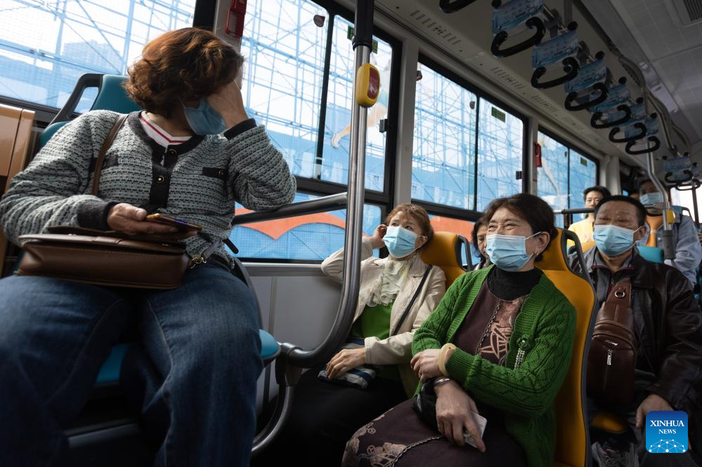
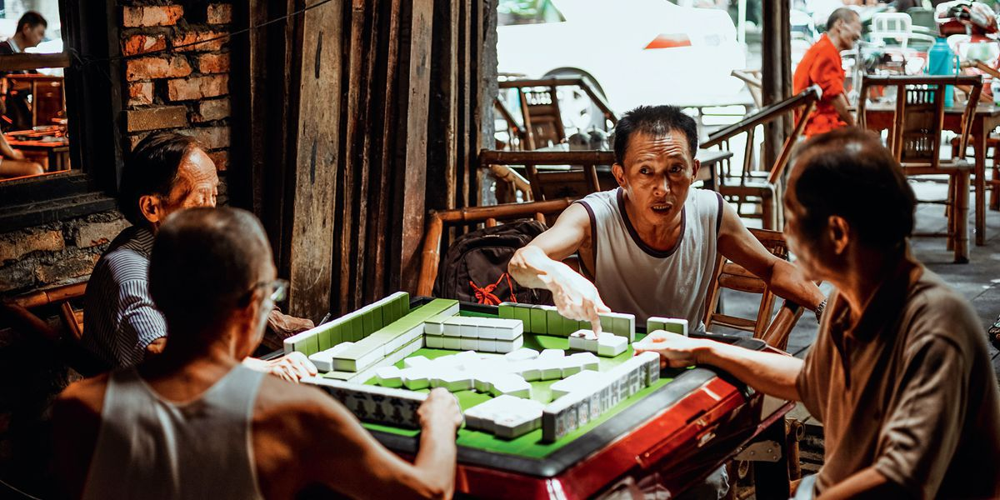
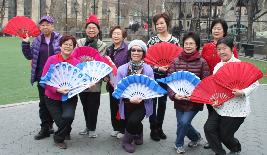

In Chinese culture, there is a deeply ingrained and widely upheld value of respecting the elderly, rooted in Confucian philosophy and traditional family structures. The concept of filial piety, emphasized by Confucius, encourages the reverence and care for one's elders as a fundamental virtue. Chinese society places great importance on family cohesion, and the elderly are regarded as the repositories of wisdom, experience, and cultural heritage. Respecting the elderly is seen as a way to honor the contributions they have made throughout their lives and to express gratitude for the guidance they provide to younger generations. Furthermore, the extended family is highly regarded in Chinese culture, and respecting the elderly is integral to maintaining harmony within the family unit. This cultural ethos not only strengthens familial bonds but also fosters a sense of continuity and interconnectedness between generations, emphasizing the reciprocal nature of respect and care within the family structure.
Instances of hate crimes against Chinese elderly individuals have been distressingly prevalent, exemplified by a particularly alarming incident in San Francisco and elsewhere. In recent years, there have been reported cases of physical assaults, verbal abuse, and targeted robberies specifically directed at elderly members of the Chinese community. The elderly, already vulnerable due to age-related factors, have been subjected to unwarranted violence and harassment solely based on their ethnicity. In the San Francisco incident and similar occurrences, assailants have brazenly targeted Chinese seniors, exacerbating the distressing intersection of ageism and racial discrimination. These incidents underscore the urgent need for communities to address the root causes of such crimes, promote cultural understanding, and implement measures to ensure the safety and well-being of all individuals, regardless of their age or ethnic background. It is crucial for law enforcement, community leaders, and society at large to work collaboratively to condemn and combat these hate crimes, fostering an environment where everyone can live free from fear and discrimination.

Asian elderly individuals often demonstrate remarkable work ethic, engaging in various labor-intensive activities that reflect their resilience and determination. Many can be found tirelessly collecting trash, a physically demanding task that often goes unrecognized. In urban areas, some Asian seniors establish makeshift stalls, working long hours selling goods on the streets, showcasing their entrepreneurial spirit and commitment to financial independence. Additionally, numerous elderly individuals take on roles in food preparation or cleaning services, contributing to their communities through hard work and dedication. Despite facing the challenges of age, these individuals embody a strong work ethic and a sense of responsibility, highlighting the value they place on self-sufficiency and contributing to society. Their stories serve as a testament to the enduring strength and work ethic of Asian elderly populations, who continue to play vital roles in their communities through their labor and resilience.

Chinese elderly individuals often exemplify vibrant and healthy lifestyles, becoming inspirations within their communities. One notable aspect is the phenomenon of street dancing, where groups of elderly individuals gather in public spaces during the evenings to engage in lively dance routines. This form of exercise not only promotes physical fitness but also fosters a sense of community and social connection. Additionally, the tradition of enjoying tea and playing mahjong is a prevalent and cherished pastime among Chinese seniors. These activities contribute to mental agility, strategic thinking, and social engagement, showcasing the holistic approach to health and well-being embraced by the elderly population. Through their participation in these activities, Chinese elders serve as living examples of the importance of staying active, socially connected, and mentally stimulated well into their later years, thereby influencing younger generations to prioritize holistic health and community engagement.